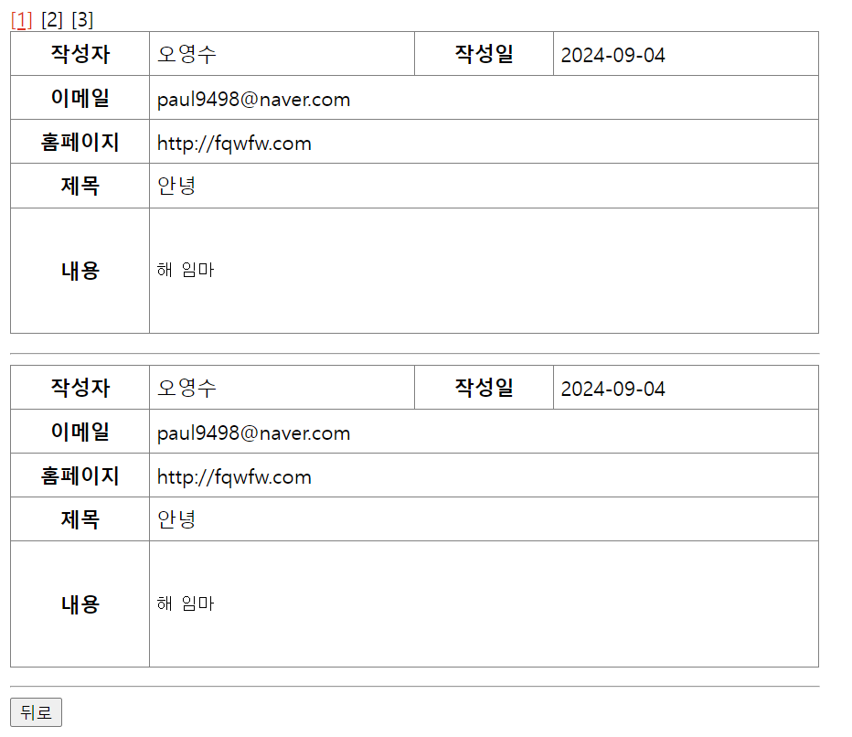
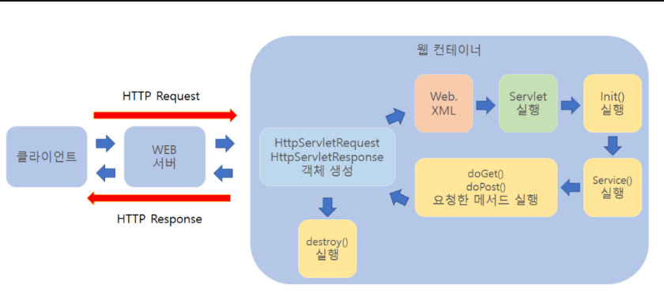

동적 웹 페이지를 만들 때 사용되는 자바 기반의 웹 어플리케이션 프로그래밍 기술이다. 서블릿은 웹 요청과 응답의 흐름을 간단한 메서드 호출만으로 체계적으로 다룰 수 있게 해준다.

특징
- 클라이언트의 Request에 대해 동적으로 작동하는 웹 어플리케이션 컴포넌트
- 기존의 정적 웹 프로그램의 문제점을 보완하여 동적인 여러 가지 기능을 제공
- Java의 스레드를 이용하여 동작
- MVC 패턴에서 컨트롤러로 이용됨
- 컨테이너에서 실행
- 컨테이너 : 서블릿을 실행하고 관리하는 소프트웨어 환경을 의미(ex : Apache Tomcat)
- 보안 기능을 적용하기 쉬움
서블릿의 동작과정

1. 클라이언트 요청
2. HttpServletRequest, HttpServletResponse 객체 생성
3. Web.xml이 어느 서블릿에 대해 요청한 것인지 탐색
4. 해당하는 서블릿에서 service() 메소드 호출
5. doGet() 또는 doPost() 호출
6. 동적 페이지 생성 후 ServletResponse 객체에 응답 전송
7. HttpServletRequest, HttpServletResponse 객체 소멸서블릿의 생명주기
이 순서는 init(), service(), doGet()/doPost(), 그리고 destroy()
서블릿도 자바 클래스이므로 실행하면 초기화부터 서비스 수행 후 소멸하기까지의 과정을 거친다. 이 과정을 서블릿의 생명주기라하며 각 단계마다 호출되어 기능을 수행하는 콜백 메서드를 서블릿 생명주기 메서드라한다.
- 클라이언트의 요청이 들어오면 컨테이너는 해당 서블릿이 메모리에 있는지 확인
- 없을 경우 init()메서드를 호출하여 메모리에 적재한다.
- init()은 처음 한번만 실행되기 때문에, 서블릿의 스레드에서 공통적으로 사용해야 하는 것이 있다면 오버라이딩 하여 구현하면 된다.
- 실행 중 서블릿이 변경될 경우, 기존 서블릿을 destroy()하고 init()을 통해 새로운 내용을 다시 메모리에 적재한다.
- init()이 호출된 후 클라이언트의 요청에 따라서 service() 메소드를 통해 요청에 대한 응답이 doGet()과 doPost()로 분기된다.
- 이 때 서블릿 컨테이너가 클라이언트의 요청이 오면 가장 먼저 처리하는 과정으로 생성된 HttpServletRequest, HttpServleResponse에 의해 request와 response 객체가 제공된다.
- 컨테이너가 서블릿에 종료 요청을 하면 destroy() 메소드가 호출되는데 마찬가지로 한번만 실행되며, 종료시에 처리해야 하는 작업들은 destroy() 메소드를 오버라이딩하여 구현하면 된다.
서블릿 생명주기 메서드
초기화 : init()
- 서블릿 요청 시 맨 처음 한 번만 호출된다.
- 서블릿 생성 시 초기화 작업을 주로 수행한다.
작업 수행 : doGet(), doPost()
- 서블릿 요청 시 매번 호출된다.
- 실제로 클라이언트가 요청하는 작업을 수행한다.
종료 : destroy()
- 서블릿이 기능을 수행하고 메모리에서 소멸될 때 호출된다.
- 서블릿의 마무리 작업을 주로 수행한다.
서블릿 컨테이너
서블릿 컨테이너란, 구현되어 있는 servlet 클래스의 규칙에 맞게 서블릿을 담고 관리해주는 컨테이너다 클라이언트에서 요청을 하면 컨테이너는 HttpServletRequest, HttpServletResponse 두 객체를 생성하여 post, get여부에 따라 동적인 페이지를 생성하여 응답을 보낸다.
역할
- 웹서버와의 통신 지원
- 서블릿 생명주기 관리
- 멀티쓰레드 지원 및 관리
- 선언적인 보안 관리
- guestbookWrite
<!DOCTYPE html> <html> <head> <meta charset="UTF-8"> <title>Insert title here</title> <link rel="stylesheet" href="../css/common.css"> <script type="text/javascript" src="https://code.jquery.com/jquery-3.7.1.min.js"></script> <script type="text/javascript" src="../js/main.js"></script> </head> <body> <form method="post" action="/guestbookServlet/guestbook"> <table border="1"> <tr> <th>작성자</th> <td> <input type="text" name="name" id="name" placeholder="작성자 입력"> </td> </tr> <tr> <th>이메일</th> <td> <input type="email" name="email" id="email" placeholder="이메일 입력" placeholder="account@example.com"> </td> </tr> <tr> <th>홈페이지</th> <td> <input type="text" name="homepage" id="homepage" value="http://"> </td> </tr> <tr> <th>제목</th> <td> <input type="text" name="subject" id="subject" placeholder="제목 입력"> <div id = subjectDiv></div> </td> </tr> <tr> <th>내용</th> <td> <textarea id="content" name="content" rows="15" cols="45"></textarea> <div id = contentDiv></div> </td> </tr> <tr> <td colspan="3" align="center"> <input type="submit" value="글작성"> <input type="reset" value="다시작성"> <input type="button" onclick="location.href='/guestbookServlet/list?page=1'" value="글목록" /> </td> </tr> </table> </form> </body> </html> - GuestbookWriteServlet ( POST 요청 )
@WebServlet("/guestbook")
public class GuestbookWriteServlet extends HttpServlet {
private static final long serialVersionUID = 1L;
protected void doPost(HttpServletRequest request, HttpServletResponse response) throws ServletException, IOException {
request.setCharacterEncoding("UTF-8"); //한글처리 - post방식일때만 처리함
String name = request.getParameter("name");
String email = request.getParameter("email");
String homepage = request.getParameter("homepage");
String subject = request.getParameter("subject");
String content = request.getParameter("content");
GuestbookDAO guestbookDAO = GuestbookDAO.getInstance();
GuestbookDTO guestbookDTO = new GuestbookDTO(name, email, homepage, subject, content);
guestbookDAO.guestboorWrite(guestbookDTO);
response.setContentType("text/html; charset=UTF-8");
PrintWriter out = response.getWriter();
out.println("<html>");
out.println("<body>");
out.println("<h3>작성하신 글을 저장하였습니다.</h3>");
out.println("<input type='button' onclick='history.go(-1)' value='뒤로'>");
out.println("<input type='button' onclick=location.href='/guestbookServlet/list?page=1' value='글목록'>");
out.println("</body>");
out.println("</html>");
}
}
doPost로 해당 endPoint로 POST 요청이 들어왔을 때 로직이 실행이 된다.- 이클립스 환경은
localhost:8080/{프로젝트명}이 붙어야 하기 때문에 action에 /guestbookServlet/guestbook 이렇게 온다
- GuestbookListServlet
package com.guestbook.service; import java.io.IOException; import java.io.PrintWriter; import java.util.List; import javax.servlet.ServletException; import javax.servlet.annotation.WebServlet; import javax.servlet.http.HttpServlet; import javax.servlet.http.HttpServletRequest; import javax.servlet.http.HttpServletResponse; import com.guestbook.bean.GuestbookDTO; import com.guestbook.dao.GuestbookDAO; @WebServlet("/list") public class GuestbookListServlet extends HttpServlet { private static final long serialVersionUID = 1L; protected void doGet(HttpServletRequest request, HttpServletResponse response) throws ServletException, IOException { int page = Integer.parseInt(request.getParameter("page")); // 1페이지당 count 개씩 int count = 2; int endNum = page*count; int startNum = endNum - (count - 1); GuestbookDAO guestbookDAO = GuestbookDAO.getInstance(); List<GuestbookDTO> list = guestbookDAO.guestboorList(startNum, endNum); int totalNum = guestbookDAO.getTotalNum(); int pageCount = (totalNum + (count - 1)) / count; StringBuilder sb = new StringBuilder(); response.setContentType("text/html; charset=UTF-8"); PrintWriter out = response.getWriter(); out.println("<html>"); out.println("<head>"); out.println("<style type='text/css'>"); out.println("table { border-collapse: collapse; margin-bottom: 15px}"); out.println("th, td { padding: 5px; height: 35px; }"); out.println("th { width: 100px; }"); out.println("hr { width: 643px;}"); out.println("td { width: 200px; overflow: auto;}"); out.println("#currentPaging { color: red; text-decoration: underline; }"); out.println("#paging { color: black; text-decoration: none; }"); out.println("pre { white-space: pre-wrap; }"); out.println("</style>"); out.println("</head>"); out.println("<body>"); if (list == null) { sb.append("항목이 없습니다"); } else { for (int i = 1; i <= pageCount; i++) { if(i == page) { sb.append("<a id='currentPaging' href='/guestbookServlet/list?page=").append(i).append("'>[").append(i).append("]</a> "); } else { sb.append("<a id='paging' href='/guestbookServlet/list?page=").append(i).append("'>[").append(i).append("]</a> "); } } out.println(sb.toString()); sb.setLength(0); //StringBulider 초기화 for (int i = 0; i < list.size(); i++) { sb.append("<table border='1'>") .append("<tr>") .append(" <th>작성자</th>") .append(" <td>").append(list.get(i).getName()).append("</td>") .append(" <th>작성일</th>") .append(" <td>").append(list.get(i).getLogtime()).append("</td>") .append(" </tr>") .append(" <tr>") .append(" <th>이메일</th>") .append(" <td colspan='3'>").append(list.get(i).getEmail()).append("</td>") .append(" </tr>") .append(" <tr>") .append(" <th>홈페이지</th>") .append(" <td colspan='3'>").append(list.get(i).getHomepage()).append("</td>") .append(" </tr>") .append(" <tr>") .append(" <th>제목</th>") .append(" <td colspan='3'>").append(list.get(i).getSubject()).append("</td>") .append(" </tr>") .append(" <tr>") .append(" <th>내용</th>") .append(" <td colspan='3' style='height: 100px'><pre>").append(list.get(i).getContent()).append("</pre></td>") .append("</tr>") .append("</table>") .append("<hr align='left'>"); } } out.println(sb.toString()); out.println("<input type='button' onclick='history.go(-1)' value='뒤로'>"); out.println("</body>"); out.println("</html>"); } }
- 페이징 분석
- 페이지 번호 파라미터 추출
int page = Integer.parseInt(request.getParameter("page")); - 페이지당 항목 수 설정 및 조회 범위 계산
int count = 2; // 한 페이지에 표시할 방명록 항목의 수 정의 int endNum = page * count; // 현재 페이지의 마지막 항목 번호 계산 int startNum = endNum - (count - 1); // 현재 페이지의 첫번째 항목 번호를 계산 - 전체 페이지 수 계산
int totalNum = guestbookDAO.getTotalNum(); int pageCount = (totalNum + (count - 1)) / count;totalNum변수는 데이터베이스에 저장된 전체 방명록 항목의 수pageCount변수는 전체 페이지 수를 계산
- 페이지 링크 생성
StringBuilder sb = new StringBuilder(); for (int i = 1; i <= pageCount; i++) { if (i == page) { sb.append("<a id='currentPaging' href='/guestbookServlet/list?page=").append(i).append("'>[").append(i).append("]</a> "); } else { sb.append("<a id='paging' href='/guestbookServlet/list?page=").append(i).append("'>[").append(i).append("]</a> "); } }- 현재 페이지는
currentPaging이라는 CSS ID를 사용하여 강조 표시됨 - 다른 페이지는
paging이라는 CSS ID로 표시 - 링크 다음과 같이 생성
<a id='paging' href='/guestbookServlet/list?page=1'>[1]</a> <a id='paging' href='/guestbookServlet/list?page=2'>[2]</a> <a id='currentPaging' href='/guestbookServlet/list?page=3'>[3]</a> <a id='paging' href='/guestbookServlet/list?page=4'>[4]</a> <a id='paging' href='/guestbookServlet/list?page=5'>[5]</a>
- 현재 페이지는
- 페이지 번호 파라미터 추출